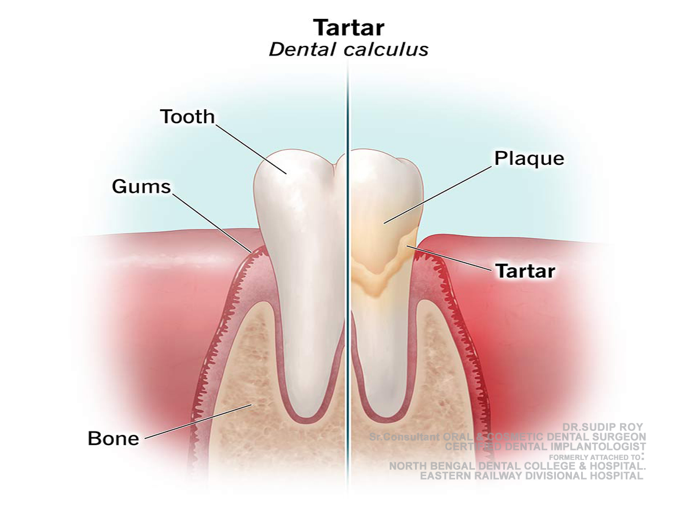

Senior Consultant Dr. Sudip Roy – B.D.S. (1997) • Oral & Cosmetic Surgeon
Expert Clinical Answers

What causes bad breath even after brushing?১. ব্রাশ করার পরেও মুখে দুর্গন্ধ থাকে কেন?1. ब्रश करने के बाद भी सांसों में बदबू क्यों आती है?Persistent bad breath (halitosis) may be caused by bacteria buildup on the tongue or underlying gum issues like periodontitis. Dr. Sudip Roy recommends a clinical evaluation at SMILE Dental Clinic in Jalpaiguri to identify if deep-seated plaque or systemic health factors are contributing to chronic halitosis.মুখে দুর্গন্ধের জন্য জিভে জমে থাকা ব্যাকটেরিয়া বা মাড়ির সমস্যা দায়ী হতে পারে। ডাক্তার সুদীপ রায় জলপাইগুড়িতে এর সঠিক কারণ নির্ণয় করতে সাহায্য করেন।सांसों की बदबू मसूड़ों की समस्या या जीभ पर बैक्टीरिया के कारण हो सकती है। विशेषज्ञ जांच के लिए डॉ. रॉय से परामर्श लें।
Why do my teeth feel sensitive to cold?২. দাঁত শিরশির করে কেন?2. दांतों में झनझनाहट क्यों होती है?Sensitivity occurs when protective enamel wears down or gums recede, exposing the dentin. At SMILE Dental Clinic, we evaluate if dentin is exposed to provide targeted desensitizing treatments or bonding to protect your nerves from temperature changes.দাঁতের এনামেল ক্ষয় হয়ে গেলে শিরশিরানি অনুভূত হতে পারে। স্মাইল ডেন্টাল ক্লিনিকে আমরা এটি নির্ণয় করে সঠিক চিকিৎসা প্রদান করি।इनेमल घिसने के कारण दांतों में संवेदनशीलता महसूस होती है। डॉ. सुदीप रॉय इसके लिए विशेष उपचार प्रदान करते हैं।
How long do dental implants last?৩. ডেন্টাল ইমপ্ল্যান্ট কতদিন থাকে?3. डेंटल इम्प्लांट कितने समय तक चलते हैं?With proper oral hygiene and regular clinical care, dental implants at our Jalpaiguri center are designed to be a life-long solution for missing teeth. Dr. Sudip Roy uses MRI-safe materials and advanced surgical protocols to ensure maximum durability and biocompatibility for long-term success.সঠিক যত্নে এবং বিশেষজ্ঞের পরামর্শে ইমপ্ল্যান্ট আজীবন স্থায়ী হতে পারে।सही देखभाल के साथ इम्प्लांट जीवन भर चल सकते हैं।
Are dental X-rays safe?৪. ডেন্টাল এক্স-রে কি নিরাপদ?4. क्या डेंटल एक्स-रे सुरक्षित हैं?Modern digital X-rays used by Dr. Sudip Roy involve minimal radiation—up to 80% less than traditional films. They are essential diagnostic tools that allow us to identify hidden cavities, bone loss, and infections that are not visible during physical examinations.হ্যাঁ, আধুনিক ডিজিটাল এক্স-রে তে রেডিয়েশন অত্যন্ত কম এবং এটি সম্পূর্ণ নিরাপদ।हाँ, आधुनिक डिजिटल एक्स-रे सुरक्षित हैं और इनमें बहुत कम रेडिएशन होता है।
What is the difference between a crown and a veneer?৫. ক্রাউন এবং ভিনিয়ার এর মধ্যে পার্থক্য কী?5. क्राउन और विनियर में क्या अंतर है?Veneers are thin porcelain shells bonded to the front of teeth for cosmetic enhancement like gap closure, while crowns cover the entire tooth to restore strength after decay or root canal treatment. Dr. Sudip Roy provides both options in Jalpaiguri based on clinical need.ভিনিয়ার কেবল সামনের অংশ ঢাকে, ক্রাউন পুরো দাঁতকে সুরক্ষা দেয়।विनियर सामने के हिस्से को ढकता है, क्राउन पूरे दांत को सुरक्षा देता है।
Need a Professional Diagnosis?
আপনার কি বিশেষজ্ঞের পরামর্শ প্রয়োজন?
क्या आपको विशेषज्ञ की सलाह चाहिए?
Discuss your concerns with Dr. Sudip Roy (28+ years experience) at our Pahari Para clinic.